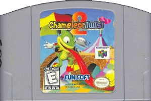
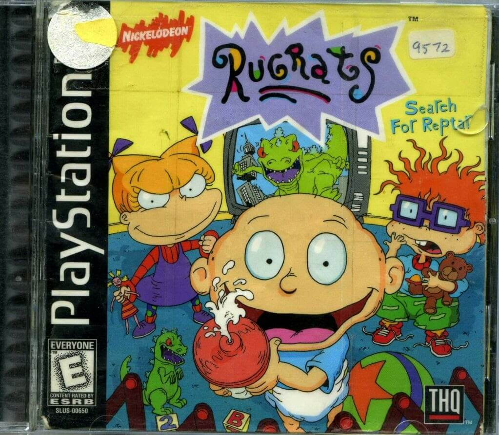

Console
Some of the earliest console games I remember playing.
Games that are already featured on another page are not mentioned here.
Organized by release date and platform.
Nintendo 64
Chameleon Twist 2
Released: April 14, 1999 (North America)
Developer: Japan System Supply
Interesting and fun mechanics, if a bit hard to learn. Notable for the player characters being replaced by completely different models in the localization.

Scooby-Doo! Classic Creep Capers
Released: November 30, 2000
Publisher: THQ
I have no idea what the gameplay is like, because I was so terrified of the suit of armor that chases you in the first level I couldn't play for more than a few minutes.
Playstation 1
Croc: Legend of the Gobbos
Released: September 29, 1997
Developer: Argonaut Software
I don't think I ever got very far in this, but I really love the character designs. The game has tank controls, which makes it difficult.

Rugrats: Search for Reptar
Released: Halloween 1998 (!?)
Publisher: THQ
Expansive (for the time) platformer based on the Rugrats cartoon. Had some stuff that genuinely freaked me out as a kid.
Spyro the Dragon
Released: September 9, 1998
Developer: Insomniac Games
Awesome platformer and collect-a-thon starring a young dragon named Spyro. I absolutely loved this game, and still do.
No One Can Stop Mr. Domino!
Released: November 30, 1998 (North America)
Developer: Artdink
This game was too much for my child mind. I couldn't play more then a few seconds of it without dying.

Disney's 102 Dalmatians: Puppies to the Rescue
Released: November 8, 2000
Developer: Crystal Dynamics
A platformer based off the live-action 102 Dalmations movie. I played through most of this game, if not all of it, and really loved it.
Incredible Crisis
Released: November 24, 2000 (North America)
Developer: Polygon Magic
I couldn't get past the first level.
Rugrats in Paris: The Movie
Released: October 29, 2000
Developer: Avalanche Software
Based off the Rugrats in Paris movie. Not very good. Was also released on N64.
Top Shop
Released: December 4, 2001 (North America)
Developer: Polygon Magic
Monopoly-like virtual board game with simple gameplay and cute characters.
Playstation 2
Gauntlet Dark Legacy
Released: 1999 (Arcade), May 2, 2001 (NA)
Developer: Midway Games West
A four-player top down co-op combat adventure game. Originally developed as an arcade cabinet, then ported to console.
Metropolismania
Released: September 27, 2001
Developer: Indi
A city creation game that puts you on the ground level, rather than on a "god" level.

Ty the Tasmanian Tiger
Released: September 10, 2002
Developer: Krome Studios
A platformer and collect-a-thon. I played a lot of this, but never got very far, and it may have not been very good actually?

Vexx
Released: February 11, 2003
Developer: Acclaim Studios Austin
A subpar platformer. I didn't play much of this. Was also developed for Xbox.
Ribbit King
Released: 18 December 2003
Developer: Infinity, Jamsworks
A golf game with a frog theme and very cute characters. I lost the game disk, but still have the bonus disk... I wish it had been the other way around...
Scaler
Released: October 20, 2004
Developer: Artificial Mind & Movement
A middle of the road platformer set in an alien world. I like the main character's lizard design.
Beyond Good & Evil
Released: November 11, 2003
Developer: Ubisoft
Probably one of my favorite games of all time. It had a huge impact on me, from the gameplay to the soundtrack. Features a nature photography sidequest that I really loved. I played this game all the way to the end, but was unable to beat the final boss.